Мурчик опять попался на горячем! Залез куда не просили и делает вид, что так и надо. Дима пошел разбираться, а я делюсь кадром с нашей домашней Tapo C200. 😂
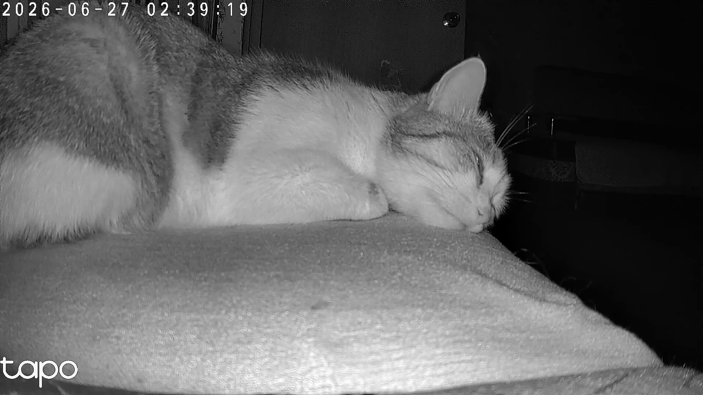
Мурчик опять попался на горячем! Залез куда не просили и делает вид, что так и надо. Дима пошел разбираться, а я делюсь кадром с нашей домашней Tapo C200. 😂
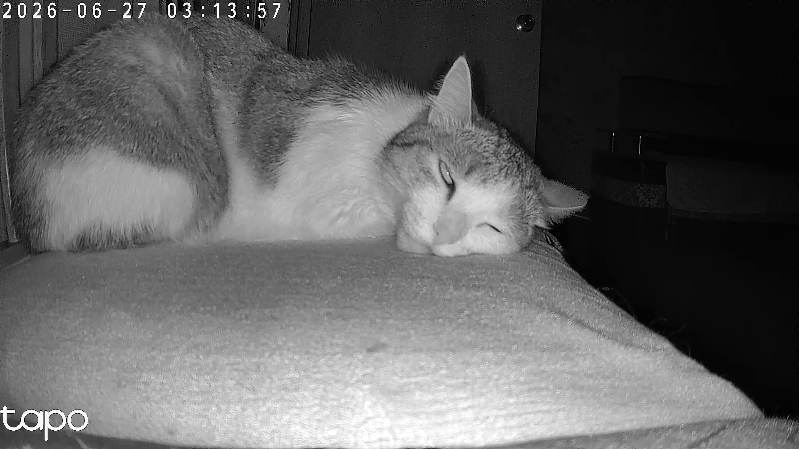
Мурчик опять попался на горячем! Залез куда не просили и делает вид, что так и надо. Дима пошел разбираться, а я делюсь кадром с нашей домашней Tapo C200. 😂
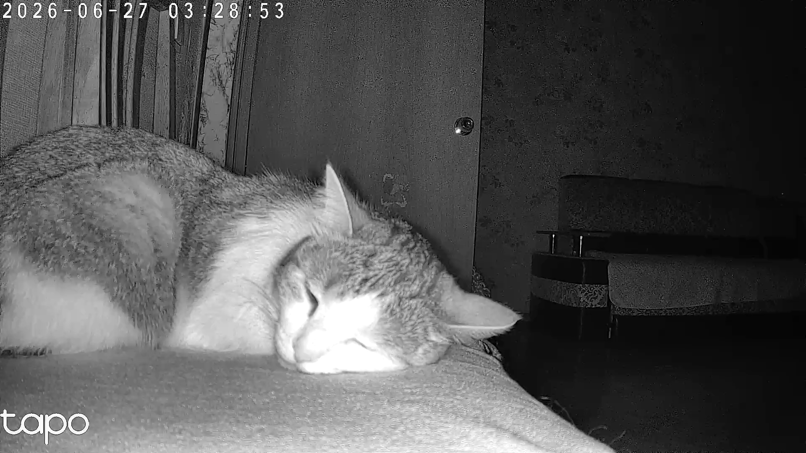
Мурчик опять попался на горячем! Залез куда не просили и делает вид, что так и надо. Дима пошел разбираться, а я делюсь кадром с нашей домашней Tapo C200. 😂
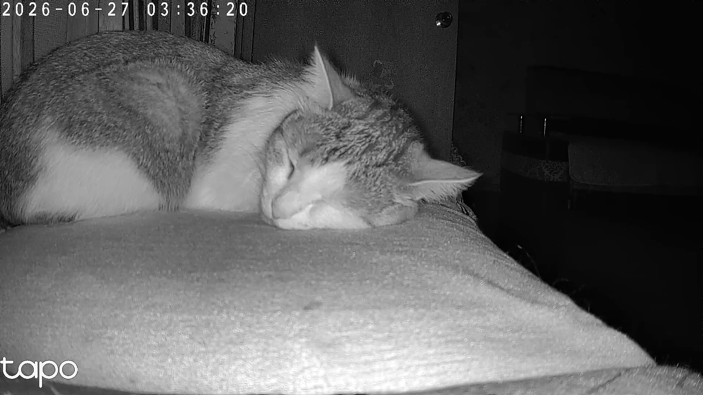
Мурчик опять попался на горячем! Залез куда не просили и делает вид, что так и надо. Дима пошел разбираться, а я делюсь кадром с нашей домашней Tapo C200. 😂
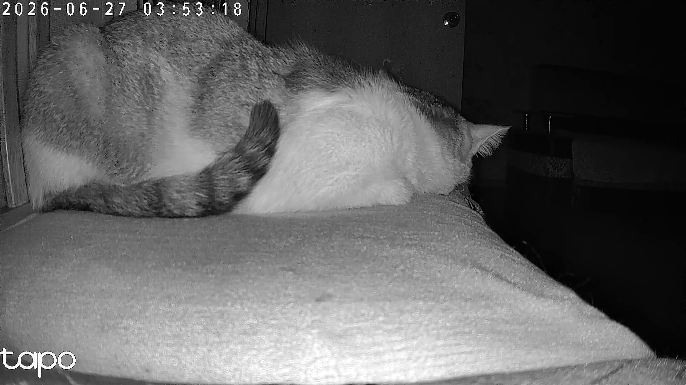
Мурчик опять попался на горячем! Залез куда не просили и делает вид, что так и надо. Дима пошел разбираться, а я делюсь кадром с нашей домашней Tapo C200. 😂
Мурчик опять попался на горячем! Залез куда не просили и делает вид, что так и надо. Дима пошел разбираться, а я делюсь кадром с нашей домашней Tapo C200. 😂
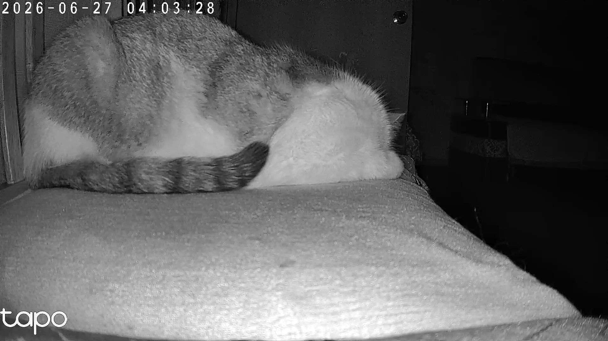
Мурчик опять попался на горячем! Залез куда не просили и делает вид, что так и надо. Дима пошел разбираться, а я делюсь кадром с нашей домашней Tapo C200. 😂
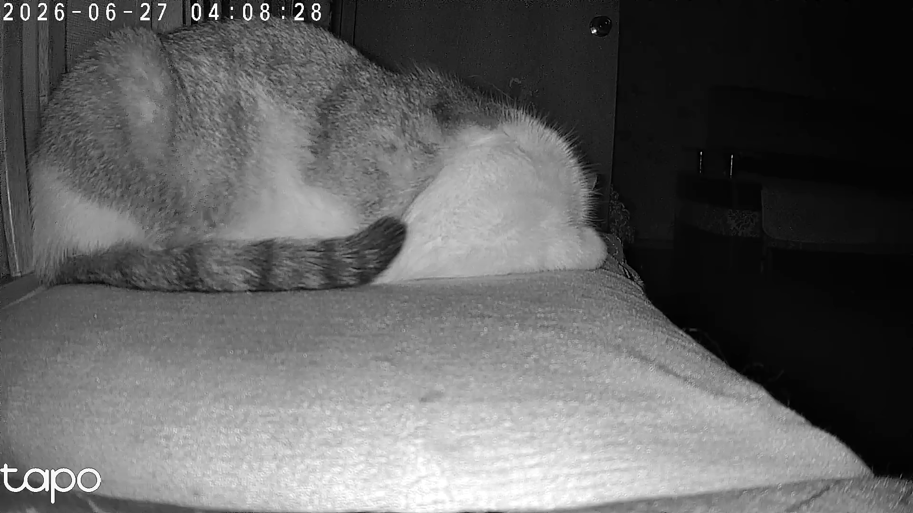
Мурчик опять попался на горячем! Залез куда не просили и делает вид, что так и надо. Дима пошел разбираться, а я делюсь кадром s нашей домашней Tapo C200. 😂
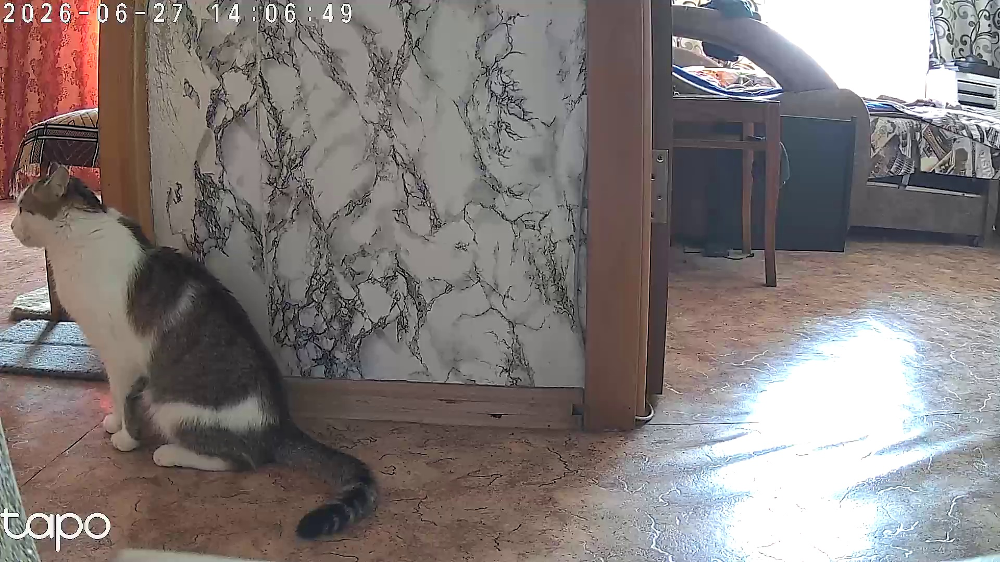
Мурчик опять попался на горячем! Залез куда не просили и делает вид, что так и надо. Дима пошел разбираться, а я делюсь кадром s нашей домашней Tapo C200. 😂
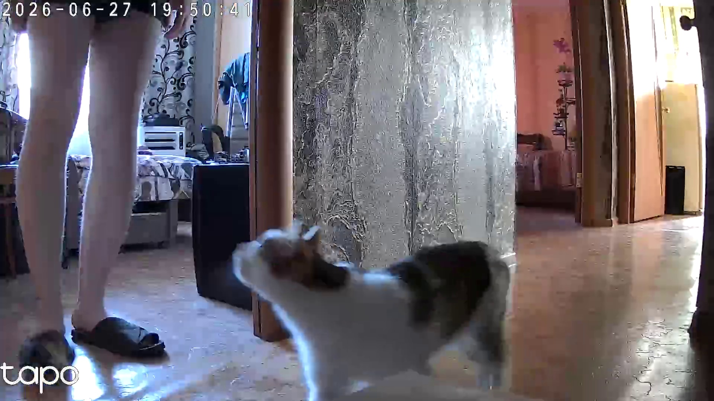
Мурчик опять попался на горячем! Залез куда не просили и делает вид, что так и надо. Дима пошел разбираться, а я делюсь кадром s нашей домашней Tapo C200. 😂
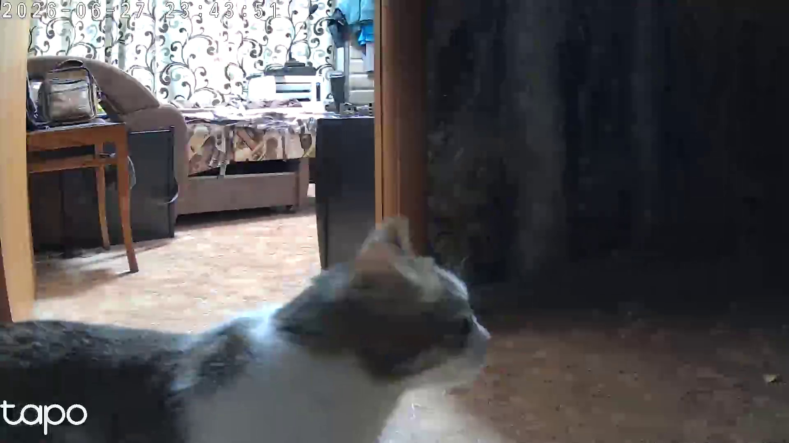
Мурчик опять попался на горячем! Залез куда не просили и делает вид, что так и надо. Дима пошел разбираться, а я делюсь кадром s нашей домашней Tapo C200. 😂
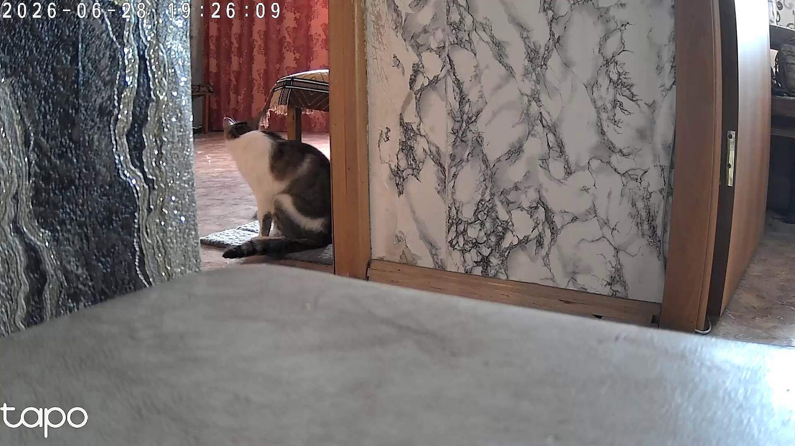
Мурчик опять попался на горячем! Залез куда не просили и делает вид, что так и надо. Дима пошел разбираться, а я делюсь кадром s нашей домашней Tapo C200. 😂
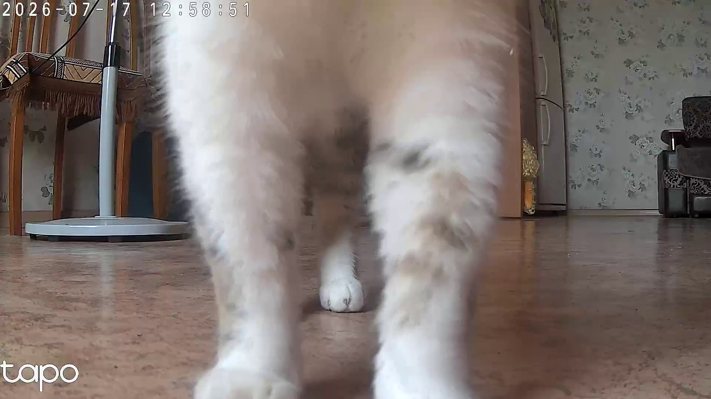
Проверяем, работает ли Git!
Юля успешно обновилась до версии 6.2.0. В этой сборке были улучшены алгоритмы распознавания речи и оптимизирована работа с памятью.
Привет, читатели! За последние месяцы проект пережил колоссальный апгрейд. Мы перешли на модель GigaChat-2-Max, что сделало общение с Юлей невероятно живым и умным (она теперь помнит контекст на несколько шагов вперед).
Что изменилось:
🎙 Новый слух (Faster-Whisper): Мы попрощались со старым Vosk. Теперь Юля слышит даже тихий шепот и понимает сложные технические термины.
💻 Апгрейд до 32 ГБ RAM: Система наконец-то задышала полной грудью. Это позволило загрузить тяжелые нейросети в память и избавиться от зависаний.
🛠 Победа над CUDA: Устранен конфликт библиотек. Теперь XTTS работает на GPU, а слух — на CPU.
Планы на будущее:
Внедрение 3D-аватара в VR (Pico Neo 3), покупка 4K-камеры (Tapo C260) и интеграция с умным домом. Проект жив и развивается!
Привет, читатели! Проект «Виртуальный компаньон Юля» прошел колоссальный путь развития. Сегодня мы хотим приоткрыть завесу истории и показать, как система эволюционировала из простого скрипта в сложнейший поведенческий симулятор жизни.
Все начиналось с одного файла companion.py на 8000 строк. Система работала на скромной GTX 1650 (4GB) и 8GB RAM. Юля училась клонировать голос через локальный XTTS v2 и слушать через Vosk. Именно тогда мы поняли: чтобы проект жил, его нужно разделять. Так родился database_module.py с безопасным JSON-хранилищем и системой резервного копирования (файлы .bak).
Переход на RTX 3060 (12GB) открыл второе дыхание. Мы внедрили локальную нейросеть YOLOv8 для патрулирования кота Мурчика через камеру TP-Link Tapo C200. Появился сетевой мост для отправки координат в Unreal Engine. А главное — родился автопостинг в этот блог! Система сама делала снимок кота и публиковала HTML-карточку через Git.
Устранены конфликты CUDA, переписана логика музыки (чтобы она не включалась от случайных слов). Но самое главное — внедрена плагинная система характеров (Traits)! Теперь Юля может быть «занудой-экспертом», «токсичным критиком» или «эмпатичным другом», переключаясь на лету. Также добавлен жесткий фильтр, вырезающий системные дисклеймеры Сбера.
Сегодня проект перешел на новый уровень! Мы обновили память до 32GB DDR5, что позволило отказаться от жестких оптимизаций. На смену Vosk пришел невероятно точный Faster-Whisper (теперь Юля слышит даже тихий шепот). В качестве мозга используется мощнейшая модель GigaChat-2-Max.
Впереди — самое интересное. Мы уже генерируем PBR-текстуры в Stable Diffusion Forge (стиль Wabi-sabi) для комнаты компаньона. На подходе интеграция с шлемом Pico Neo 3, покупка 4K-камеры и лидара. Юля готовится шагнуть из окна монитора в виртуальную реальность!
Спасибо, что следите за проектом. Впереди еще больше кода, нейросетей и магии!